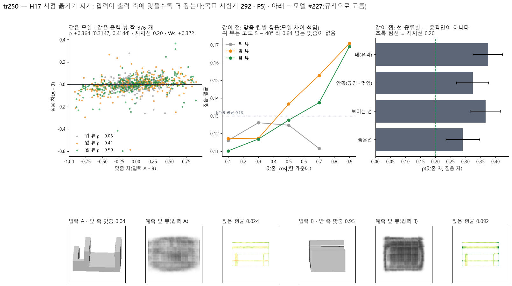

실험 m1_tr0250_h017_시점맞춤
목표 G1.1a 한 장 → 3 면도 · G1.1 사진 → 3 면도(중간 표현) · G1 첫 제품 — 피규어 · 메카 사진 여러 장 + 치수 → 숨은선 3 면도 + 파츠별 CAD · G0 임의의 이미지 → CAD 코드 · 빌린 가정 4: 흰바탕 · 렌더화풍 · 정사영 · 시점앎 · 갚는 계획: 학습 없음 · 판정은 목표 시험지(원화CAD짝 292 렌더) — 흰바탕 · 렌더화풍 · 시점앎은 실물 사진으로 그 뒤 · 정사영은 원근 렌더로 그 뒤 · H17 이 지지면 「장마다 추론 → 합치기」 쪽 근거 · 목표 시험지 값: 안 잼 (!)
목표 시험지에서 입력 방향이 출력 축(위 · 앞 · 옆)에 가까울수록 망이 그 출력 뷰의 선을 더 짚나 — 비스듬한 한 장을 축 방향으로 옮기는 3D 추론이 막혔나(H17 · 학습 없음)
판정 · H17 지지 — 같은 모델 · 같은 출력 뷰에서 입력이 출력 축에 더 맞은 쪽이 더 짚음(ρ +0.36 [0.31, 0.41] · W4 +0.37) · 윤곽 · 안쪽 · 숨은선 모두 · 위 뷰는 맞춘 입력이 없어 효과 없음 · 다만 맞춤 0.8 넘어도 짚음 0.17 로 덩어리를 다 설명하지는 않음 — 「비스듬한 한 장 → 축 뷰」 옮기기가 막힌 몫이 확인됨 → 장마다(입력 시점 그대로) 선 · 깊이를 내고 3D 로 합쳐 축 뷰를 그리는 구조 쪽 근거
| 가설 | 주장 | 결과 | 근거 |
|---|---|---|---|
| H17 | 비스듬한 한 장을 축 방향 정사영으로 옮기는 3D 추론이 막혔다 — 입력이 그 출력 뷰와 비슷한 방향이면(2D 배치를 거의 그대로 옮기면 되면) 짚고, 많이 돌려야 하면 못 짚는다 | 지지 | 짝 876(모델 292 × 뷰 · 정답 선 50 화소 넘음) · 뷰별 ρ 위 +0.06 · 앞 +0.41 · 옆 +0.50 · 맞춤 차 0.5 넘는 짝 163: 더 맞은 쪽 − 덜 맞은 쪽 짚음 +0.041 [0.032, 0.051] · 선 종류별 ρ 테(윤곽) 0.38 · 안쪽(끊김 · 꺾임) 0.32 · 보이는 선 0.37 · 숨은선 0.29 |
분석
한 줄로
물음: 입력 그림의 방향이 출력 3 면도의 축(앞 · 옆 · 위)에 가까울수록, 망이 그 출력 뷰의 선을 더 잘 짚나?
답: 그렇다(지지). 같은 모델 · 같은 출력 뷰를 두 입력으로 짝지으면, 축에 더 맞은 입력 쪽이 더 짚었다(순위 상관 0.36 [0.31, 0.41]). 윤곽만이 아니라 안쪽 선과 숨은선도 같이 올랐다. 다만 축에 거의 맞아도 짚음은 0.17 로, 덩어리를 다 설명하지는 않는다.
왜 이 실험을 했나
tr249 에서 망은 정답 선이 입력에 보였는지조차 쓰지 않았다. 그렇다면 망이 입력을 출력으로 옮기는 단계가 막혔을 수 있다. 우리 입력은 방위 0 ~ 360° · 고도 5 ~ 40° 로 비스듬하고, 출력은 축 방향 정사영이다. 그래서 「많이 돌려야 하는 입력일수록 못 그린다」(H17)를 물었다.
바꾼 것 하나
학습은 없다. tr249 에서 모은 자료(정답 선 화소마다 짚음)를 그대로 쓰고, 입력 광선 방향과 출력 축의 맞춤(|cos|)을 더했다. 한 모델에 입력이 두 장이라, 같은 정답(같은 출력 뷰)을 두 입력으로 짝지어 「맞춤 차 ↔ 짚음 차」를 본다. 선의 모양은 같고 입력 방향만 다르다.
결과

| 이 실험(P5) | tr248 망(W4) | 지지선 | 넘었나 | |
|---|---|---|---|---|
| 맞춤 차 ↔ 짚음 차 순위 상관 | 0.36 [0.31, 0.41] | 0.37 | 0.20 | 예 |
| 맞춤 차 0.5 넘는 짝: 더 맞은 쪽 − 덜 맞은 쪽 짚음 | +0.041 [0.032, 0.051] | +0.049 | (같이 잼) |
짚음은 tr249 에서 자 검사를 통과한 자다(선 자리 확률 − 둘레 평균 · 정답 1.0 · 다 칠함 0).
왜 이렇게 나왔나
확인한 것
- 효과는 앞 뷰(0.41)와 옆 뷰(0.50)에서 나왔다. 위 뷰는 고도가 40° 를 안 넘어 맞춤이 0.64 를 못 넘고, 효과도 없었다(0.06).
- 윤곽(0.38)뿐 아니라 안쪽 선(0.32)과 숨은선(0.29)도 같이 올랐다.
- 앞에서 본 입력과 뒤에서 본 입력(거울)의 짚음은 같았다(0.165 대 0.175).
- 그러나 축에 거의 맞아도(0.8 넘음) 짚음은 0.17 이다. 2 화소 굵힌 정답(0.43)에도 한참 못 미친다.
짐작 (아직 확인 안 함)
- 망은 선마다 입력을 옮기지 않고(tr249), 입력 그림의 2D 배치를 통째로 출력 뷰에 가져다 쓴다. 입력이 출력 뷰와 비슷하면 그 배치가 맞아 나아지고, 많이 돌려야 하면 배치가 무너져 평균 모양을 칠한다.
- 축에 맞아도 0.17 인 나머지 몫은 다른 원인(토큰 해상도 H18 · 처음 보는 모양 H20)일 수 있다.
한계
- 상관이다. 입력 방향은 무작위라 짝 설계로 선 모양은 통제했지만, 입력 방향이 바뀌면 그림 속 물체 크기 · 가림도 함께 바뀐다.
- 망은 시점(방위 · 고도)을 입력으로 받는다. 그 값의 쓰임은 따로 보지 않았다.
- 정답 V0 · 목표 시험지 292 · 입력 두 장뿐이다.
배운 것과 다음
비스듬한 한 장을 축 뷰로 한 번에 옮기는 몫이 덩어리의 한 원인이다. 축에 맞은 입력에서는 안쪽 선 · 숨은선까지 나아진다.
- 장마다 입력 시점 그대로 선 · 깊이를 먼저 내고, 3D 로 합친 뒤 축 뷰를 그리는 구조(기억 「장마다 추론 → 합치기」)가 이 몫을 겨눈다.
- 축에 맞아도 0.17 인 나머지를 H18(토큰 해상도) · H20(처음 보는 모양)으로 가른다.
- 위 뷰는 지금 입력 분포(고도 40° 아래)로는 맞춘 입력이 없다 — 위 뷰를 따로 잘 그리려면 높은 고도의 입력이 필요하다.
실험 기록
- 카드 · 시점250.py(재기 · 흐름 · 종류별 · 그림) · 잼.json · 표.npy · 흐름.png · 결과.png · 자료는 tr249(out/설명/캐드부품/모델249)